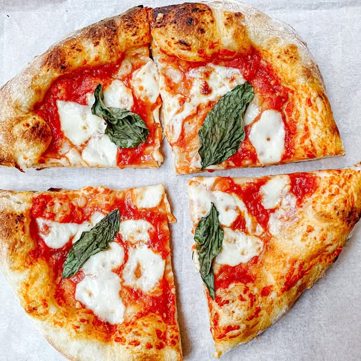

Classic Margherita Pizza
A simple yet delicious Italian Classic, with fresh basil, Mozzarella, and a crispy crust.
Prep Time:20-30 mins | Cook Time: 7-10 mins | Servings:20 | Difficlty: Medium

Ingredients
- 250g of Pizza dough.
- 1/2 cups of san marzano tomato sauce.
- Fresh basil leaves.
- 1 table spoon of extra virgin olive oil.
- A pinch of salt.
Instructions.
- Preheat your oven to 250°C (or as high as it goes).
- Roll out the dough on a lightly floured surface until thin.
- Spread the tomato sauce evenly, leaving a small border for the crust.
- Tear the Mozzarella into tiny chunks, and scatter them into the sauce.
- Bake for 10 - 15 mins until the crust is golden brown and the cheese is bubbly.
- Remove from oven and garnish with fresh basil and a drizzle of oil.